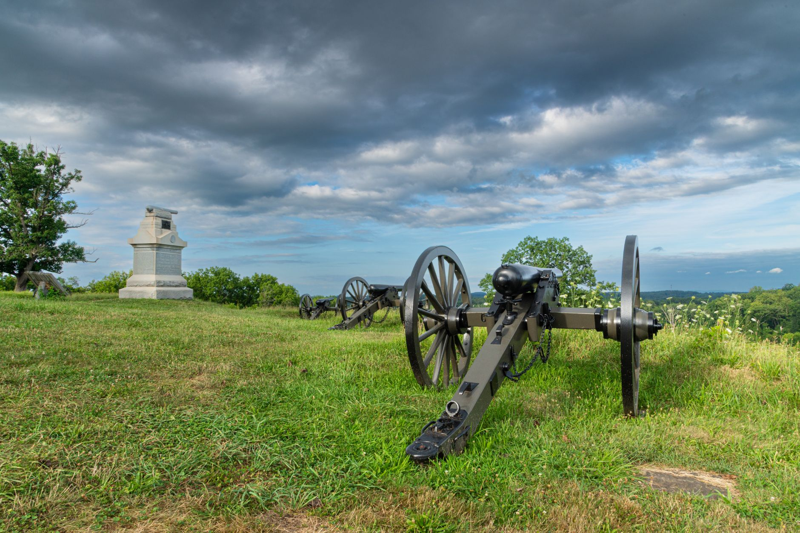
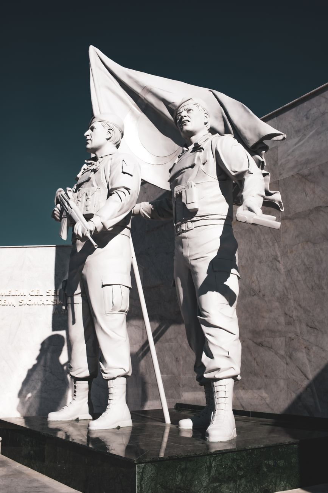

Season 1, Episode 10 — Gettysburg, July 1–3, 1863

At Gettysburg, two best friends faced each other across a mile of open field. One led the charge. The other commanded the defense. Both knew exactly who they were fighting. The war's most famous battle is also its most personal.
Lewis Armistead and Winfield Scott Hancock met before the war while serving in California. Hancock's wife Almira wrote that Armistead was "almost one of the family." Armistead was a widower — his first wife died in childbirth, his second wife died soon after. Hancock's family was his refuge.
When the war came, Armistead went South. Hancock stayed North. They parted as friends.
Armistead did not graduate from West Point — he was expelled for breaking a plate over another cadet's head. Hancock was Class of 1844, ranking 18th of 25.
July 1–3, 1863. Lee invades Pennsylvania for the second time. Three days of battle.
Lee's plan: 12,500 men across one mile of open field — directly into the center of the Union line on Cemetery Ridge. Longstreet opposed it. He told Lee: "No 15,000 men ever arrayed for battle can take that position." Lee overruled him.
Pickett's division (Virginians) would lead the charge, with divisions under Pettigrew and Trimble supporting. The artillery bombardment that preceded it was the largest of the war — but most shots overshot the Union positions. The Union artillery under Hancock's command waited — then opened fire with canister as the Confederates approached.
Armistead led his brigade to the furthest point of the Confederate advance — what would be called "the High Water Mark of the Confederacy." He put his hat on his sword so his men could see him, climbed over a stone wall, and touched a Union cannon.
Hancock had been shot earlier — a bullet struck his saddle pommel, driving a nail and wood fragments into his leg — and was being carried off the field on a stretcher. He insisted on staying to direct the defense.
Armistead was shot — hit multiple times — and fell near the cannon he had touched. As he lay dying, surrounded by Union soldiers, he asked for Hancock. He wanted to see his old friend one more time. A Union officer told him Hancock had been wounded. Armistead said: "Not in the body, I trust?"
Armistead died two days later at a Union field hospital.

Gettysburg was the turning point — Lee would never invade the North again
Over half of the 12,500 attackers were killed or wounded. Pickett's division lost 2,655 out of 4,800 men. Pickett himself survived, but was devastated. He wrote to his wife: "That old man had my division massacred." Lee met the survivors and said: "It is all my fault."
Hancock survived his wound, but it troubled him for the rest of his life. The Union victory at Gettysburg was a turning point — Lee would never invade the North again.
Despite the name, George Pickett did not command the overall assault. Longstreet commanded the overall attack. Pickett commanded only his own division — one of three divisions in the assault. Pettigrew and Trimble commanded the other two. The name "Pickett's Charge" was assigned later — partly because Pickett was the only division commander who survived (Pettigrew and Trimble were both killed or wounded). This is a classic Jeopardy trap question.
On July 3, simultaneous with Pickett's Charge, a cavalry battle raged at East Cavalry Field. George Custer (Union) faced his West Point friend Tom Rosser (Confederate). Custer, the flamboyant "Boy General," led a saber charge against Rosser's troopers. The Union cavalry won the field, preventing Confederate cavalry from supporting Pickett's attack.
Custer and Rosser had been classmates and close friends at West Point. Custer once saved Rosser from drowning.
How this works: Work through each phase in order. Don't scroll ahead to the answers.
Cover the answers below. For each clue, respond in the form of "Who is…" or "What is…". Answers are at the bottom of this page.
Phase 1 (Odd One Out):
Phase 2 (Core Jeopardy):
Phase 3 (Previously On… — Modules 7–9):
In Module 11: Appomattox — the final reunion. Grant and Lee. The end of the war, the beginning of healing.
The Armistead-Hancock friendship is the emotional core of Michael Shaara's The Killer Angels (a novel) — which inspired the movie Gettysburg. For the full history, Tom McMillan's Armistead and Hancock: Behind the Gettysburg Legend. For Pickett's Charge in detail, Earl Hess's Pickett's Charge: The Last Attack at Gettysburg.
Have a question about Gettysburg? Want to dig deeper into Armistead and Hancock, Pickett's Charge, or the cavalry fight at East Cavalry Field? Just ask — I'm your teacher.